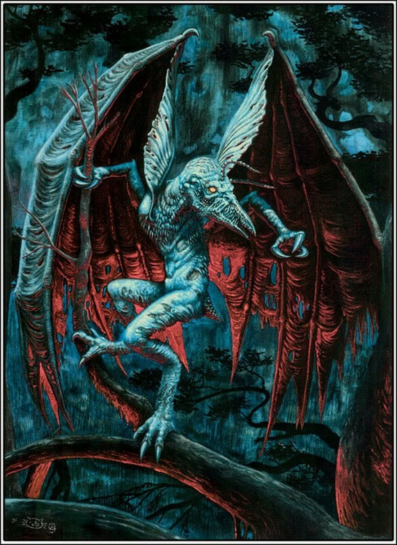

Верные прислужники Хастура Невыразимого, эти крылатые странники всегда готовы явиться на зов и, пронизав пространство время, перенести своих наездников промеж звезд и планет.
Тела бъякхи покрыты черной шерстью, а их крупные пленочные крылья говорят о схожести с летучими мышами. Но что отличает их вид от всех прочих крылатых существ — так это грозные железные клювы и адские глаза. И пусть по земле они передвигаются неуклюже — виной тому короткие перепончатые лапы, — зато в умении летать мало кто сумеет с ними сравниться!
Потому-то многие чародеи и культисты нередко используют их для перелетов в своих целях. Порой того, кто оказался в смертельной опасности в каком-нибудь недоступном человеческому воображению мире, только бьякхи и могут вызволить из беды.
Чтобы вызвать крылатого спутника, следует хлебнуть золотистого меда, напитка Старших Богов, сжать амулет, подуть в каменный свисток и произнести слова: «Йа! Йа! Хастур Хастур кф’айак 'вулггумм, вугтлаглн, вудгтмм! Ай! Ай! Хастур!» Тогда бъякхи явится к зовущему и, преодолев любую тьму и бесчисленные измерения, отвезет на своей могучей спине в безопасное место.
Впервые упоминаются в рассказе Г. Ф. Лавкрафта «Праздник» (The Festival, 1925), но название и подробное описание проявляются только у Августа Дерлета в рассказах из сборника «След Ктулху» (The Trail of Cthulhu, 1962) — «Дом на Карвен-стрит» (The House on Curwen Street, 1944), «Следящий с небес» (The Watcher from the Sky, 1945) и «Хранитель ключа» (The Keeper of the Key, 1951).
